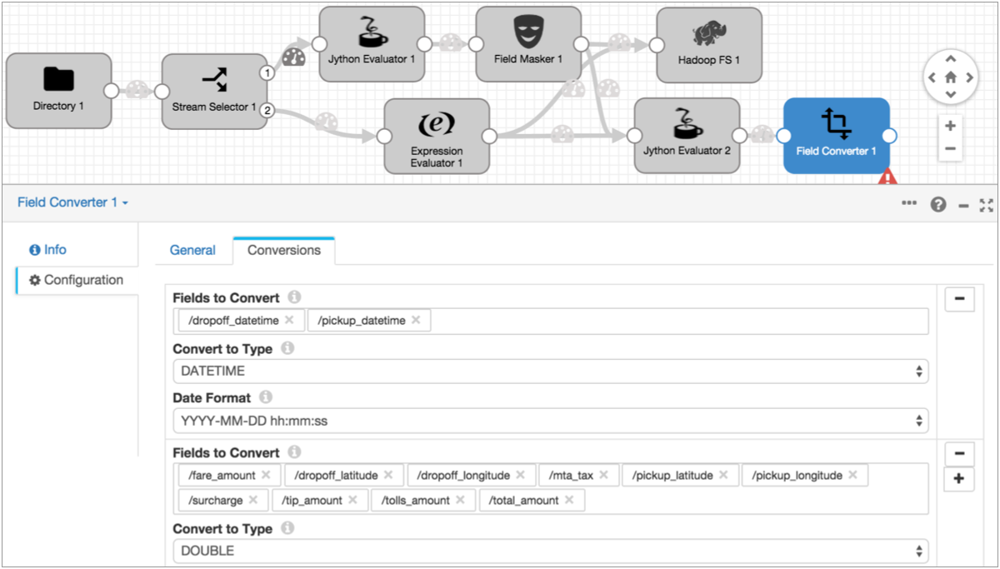
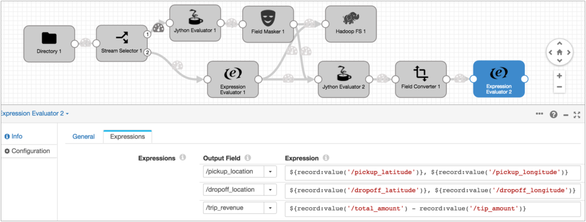
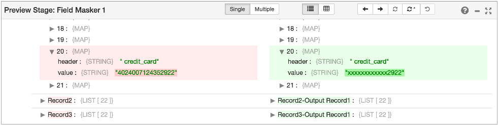
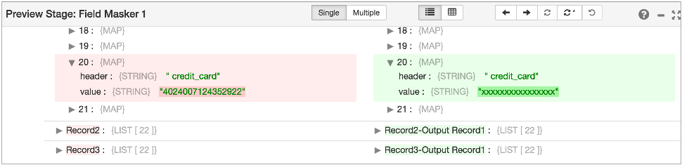
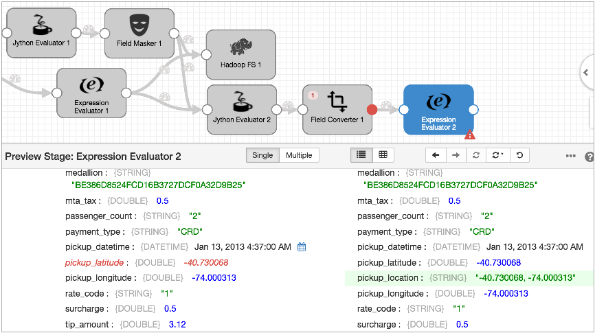
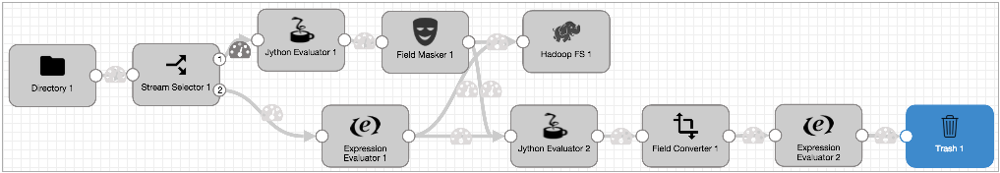

Extended Tutorial
The extended tutorial builds on the basic tutorial, using an additional set of stages to perform some data transformations and write to the Trash development destination. We'll also use data preview to test stage configuration.
You can write to a real destination instead of the Trash destination. The Trash destination allows you to run the pipeline without writing to a real destination system.
- Configure a Field Type Converter to convert field types.
- Manipulate data with the Expression Evaluator.
- Use data preview to test and update pipeline configuration.
- Complete the pipeline with the placeholder Trash destination.
- Reset the origin and run the extended pipeline.
Convert Types with a Field Type Converter
Since the sample data is read from a file, the fields are all String. Let's use a Field Type Converter to convert some data types.

Manipulate Data with the Expression Evaluator
Now we'll use an Expression Evaluator to create pickup and dropoff location fields that merge the latitude and longitude details. We'll also calculate the basic trip revenue by subtracting the tip from the total fare.
Here's the Expression Evaluator in the extended pipeline:

Preview and Edit the Pipeline
The extended tutorial is almost done, so let's use data preview to see how different stages transform data. We'll make some configuration changes and do some testing by editing preview data.
To preview the pipeline, click the Preview icon: .
- Field Masker
- Let's see how the Field Masker masks credit card numbers and change the mask that the stage uses.
- To see how the Field Masker masks credit card numbers:
- Select the Field Masker in the canvas, and then expand the first input and output record.
- Scroll down and note that the credit_card field is highlighted. This indicates the stage changed data in the field.
- Notice how all digits except the last four are masked. We did this by using the Regular Expression mask type and revealing the second group in the regex.
- 
- Say we want to mask the whole credit card number. To review the stage configuration
and try a different option:
- Scroll up to the top of the Preview panel. Then, on the left, select the Stage Configuration icon: .
- Click the Mask tab.
- Change the Mask Type to Variable Length to mask all numbers while showing how many numbers there are in the data.
- To view the results of this change, click the Run with Changes icon: .
- In the Preview panel, select the Records tab to view the
updated preview records:
 .
. - Expand an output record, and notice how the entire credit card number is now
masked:

- Field Type Converter
- The Field Type Converter changes the data type of a few fields. We'll take a look at
that stage and try changing stage configuration.
- Instead of selecting the Field Type Converter in the pipeline, click the
Next Stage icon: and select
Field Type Converter.
You might notice a red message that indicates the first record has an unparsable date - it shows that the date data includes invalid characters at the end.
So what happens to this bad record? It depends on how the stage is configured. We used the default configuration, but let's see what that is.
- On the left side of the panel, click the Stage
Configuration icon: . Notice the On Record
Error property is set to Send to Error.
This means error records are sent to the pipeline for error handling. We configured the pipeline to write all error records to file, so error records from this stage are written to file.
You can configure this property to stop the pipeline on encountering an error record or to discard error records.
- To see how it looks when you discard errors, set On Record Error to Discard, and then click the Run with Changes icon.
- In the Preview panel, click the Records icon.
Notice the first record is discarded without notice of the error that occurred.
- We prefer to keep error records, so go back to the Stage Configuration tab and change On Record Error back to Send to Error.
- Instead of selecting the Field Type Converter in the pipeline, click the
Next Stage icon: and select
Field Type Converter.
- Second Expression Evaluator
- The second Expression Evaluator manipulates data. Let's try editing the preview
data:
- Click the Next Stage icon or select the Expression Evaluator.
- Click the Records icon and expand the first input and
output record.
Notice the fields created by the stage - dropoff_location, pickup_location and trip_revenue - are highlighted in green.
Though it isn't necessary for these calculations, let's see how you can edit preview data to test stage configuration:
- In the first input record, in the Input Data column, click on the Pickup Latitude
data, 40.730068, add a negative sign before the data. Hit
Enter or click outside the data.
As shown below, the edited input data becomes red to indicate a change.
- To test the change, click the Run with Changes icon.
The Data Collector runs the preview with the change. Notice the corresponding output record now has -40.730068 for both pickup_latitude and pickup_location.

You can see how this functionality might come in handy when you want to test some cases that didn't come up in the preview data.
- To revert that change, click the Revert Data Changes icon:
 .
.This icon reverts changes to preview data.
Note: Revert Data Changes does not revert changes to stage or pipeline configuration. Manually revert configuration changes that you don't want to keep, as we did earlier in the tutorial.
When you're done exploring the preview data, click Close Preview.
Write to Trash
To wrap up the extended tutorial, let's use the Trash destination as a temporary placeholder.
The Trash destination deletes any records that pass to it. This allows you to test a pipeline without writing data to a production system.
If you prefer, you can use the Local FS destination to write to file as we did earlier in the tutorial, or you can use another destination to write to a development destination system available to you.
The Trash destination requires no configuration, so just add it to the canvas and connect the Expression Evaluator to it:

Run the Extended Pipeline
Now that the extended pipeline is complete, let's reset the origin and run the pipeline again.
Reset the origin when you want Data Collector to process all available data instead of processing data from the last-saved offset. Not all origins can be reset, but you can reset the origin for Directory.
-
In the UI menu bar, click the More icon:
 .
Then, click Reset Origin.
.
Then, click Reset Origin.
- When the confirmation dialog box displays, click Yes, then close the dialog box.
- To start the pipeline, click the Start icon.
For each stage, you can see the error messages for latest error records.
To look at all the error records, you can review the error record files in the directory that you specified. Error records are written in the SDC Record data format so you can create an error pipeline to process error records. We'll show you how to create an error pipeline to process these error records in a future tutorial.
That's it for this tutorial. Hope you found it helpful!